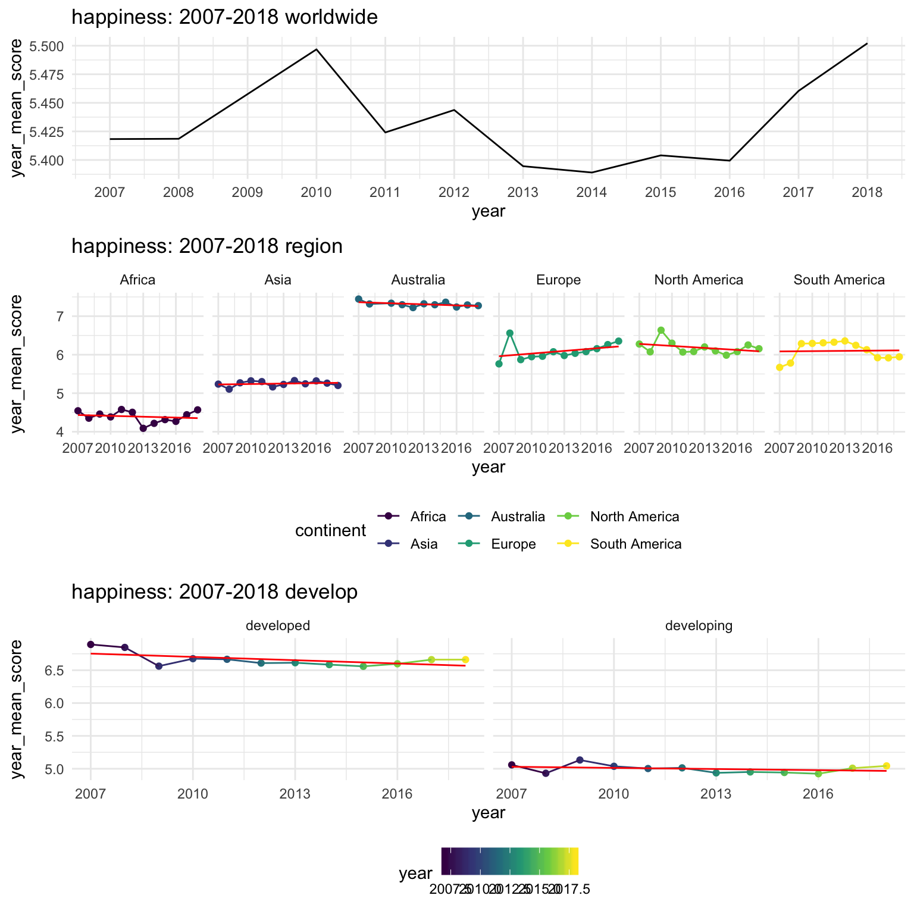
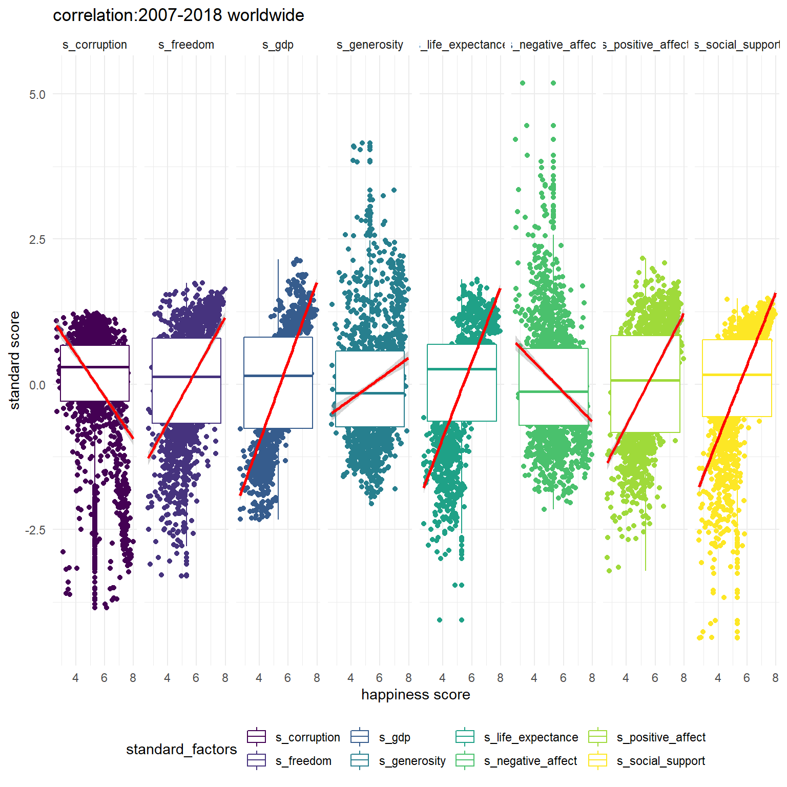
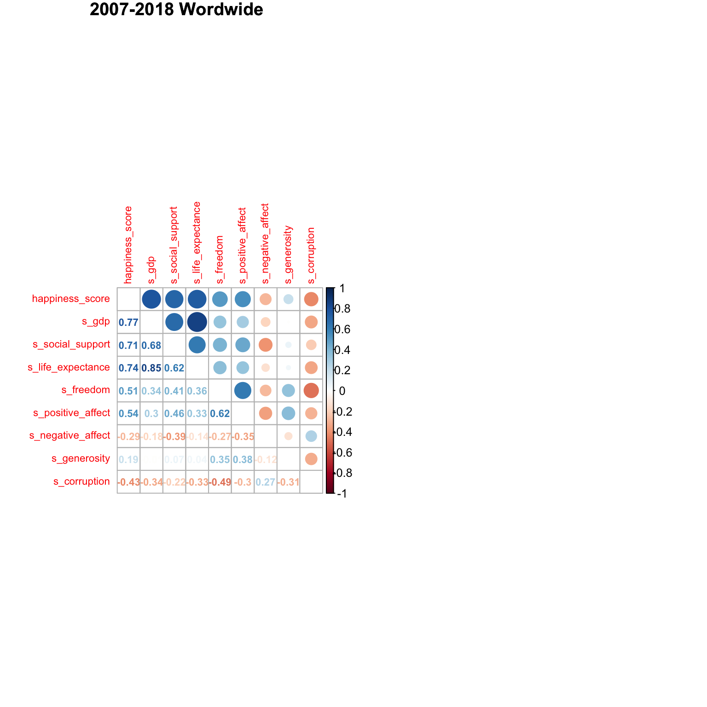
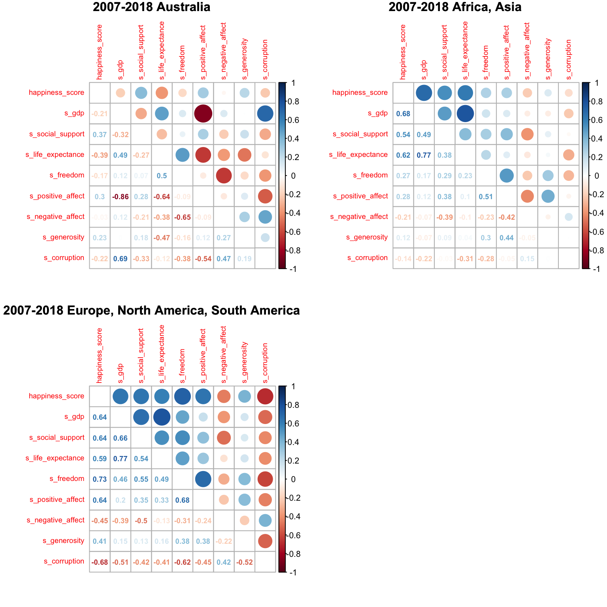
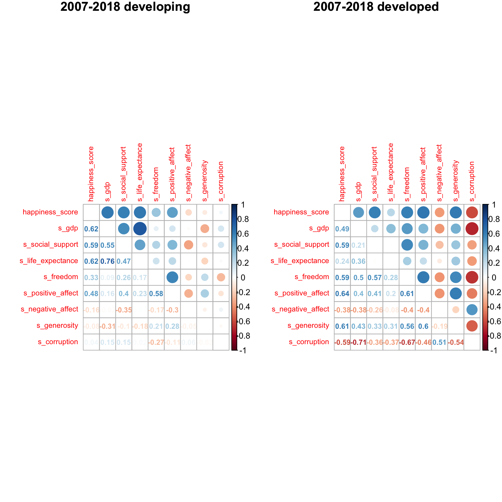

 We try to find the general trend of mean happiness changed via time by worldwide, regions and developing levels. From the first plot, we can easily find that the mean happiness score changed variously via time, but the overall score changed between 5.0 to 6.0. These changes can be regarded as moderate changes here. From the second plot, we divided these counties in different regions by the geographic continent. Australia has the overall highest and most steady mean happiness score compares to other continents. And Africa has the overall lowest and most fluctuant mean happiness score. From the third plot, we group these countries in developing and developed country by the criteria that Some economists prefer to see a per capita GDP of at least $25,000 to be comfortable declaring a country as developed, however(https://www.investopedia.com/updates/top-developing-countries/). The mean happiness score is obviously higher in developed countries than it in developing countries. It is about 6.5 in developed one, and is about 5.0 in developing one.

From the overall worldwide correlation plot for happiness score and factors, except the factors negative_affect and corruption, other factors have the positive association with happiness score, and gdp is the most associated factor. In addition, many factors have associations like gdp and life_expectance.
 According to the overall trend in mean happiness score, we divide continents in three groups. Compared with the other groups, Australia which has the highest happiness score has the inverse association with factors. Compared with the factor gdp in other two groups, gdp has the negative and non-significant association with outcome, and gdp has the negative and significant association with factor negative-affect. In other two group, the factors freedom, positive_affect, negative_affect,generosity,corruption has less significant association with happiness score, and the other factors has the less significant association with factor corruption in Africa and Asia group.

According to the plot, compared with developed country, life_expectance has the higher association with happiness score in developing country, and freedom, positive_affect, negative_affect,generosity,corruption has less significant association with happiness score. Especially, corruption plays no role in the association with outcome in developing country, but gdp is most associated with outcome.
##
## Call:
## lm(formula = happiness_score ~ freedom + negative_affect + generosity +
## life_expectance + positive_affect + corruption * develop +
## social_support * develop, data = data)
##
## Residuals:
## Min 1Q Median 3Q Max
## -1.67466 -0.33840 0.02723 0.36473 1.90737
##
## Coefficients:
## Estimate Std. Error t value Pr(>|t|)
## (Intercept) -4.351529 0.683993 -6.362 2.64e-10 ***
## freedom 0.215809 0.142792 1.511 0.130907
## negative_affect 0.160111 0.203267 0.788 0.431005
## generosity -0.112044 0.104853 -1.069 0.285429
## life_expectance 0.054419 0.002772 19.635 < 2e-16 ***
## positive_affect 2.327350 0.189293 12.295 < 2e-16 ***
## corruption -0.740659 0.131358 -5.638 2.05e-08 ***
## developdeveloping 2.450152 0.678925 3.609 0.000318 ***
## social_support 6.169076 0.686530 8.986 < 2e-16 ***
## corruption:developdeveloping 0.935168 0.194548 4.807 1.69e-06 ***
## developdeveloping:social_support -4.039126 0.704700 -5.732 1.20e-08 ***
## ---
## Signif. codes: 0 '***' 0.001 '**' 0.01 '*' 0.05 '.' 0.1 ' ' 1
##
## Residual standard error: 0.5643 on 1501 degrees of freedom
## (192 observations deleted due to missingness)
## Multiple R-squared: 0.755, Adjusted R-squared: 0.7534
## F-statistic: 462.5 on 10 and 1501 DF, p-value: < 2.2e-16##
## Call:
## lm(formula = happiness_score ~ gdp + social_support + freedom +
## negative_affect + generosity + life_expectance + positive_affect,
## data = data)
##
## Residuals:
## Min 1Q Median 3Q Max
## -1.95757 -0.34344 0.02332 0.36621 1.93191
##
## Coefficients:
## Estimate Std. Error t value Pr(>|t|)
## (Intercept) -3.079261 0.164131 -18.761 < 2e-16 ***
## gdp 0.384557 0.023933 16.068 < 2e-16 ***
## social_support 1.721325 0.179059 9.613 < 2e-16 ***
## freedom 0.573282 0.130620 4.389 1.21e-05 ***
## negative_affect -0.233670 0.193112 -1.210 0.226
## generosity 0.530652 0.096723 5.486 4.78e-08 ***
## life_expectance 0.028146 0.003476 8.096 1.13e-15 ***
## positive_affect 2.029272 0.182285 11.132 < 2e-16 ***
## ---
## Signif. codes: 0 '***' 0.001 '**' 0.01 '*' 0.05 '.' 0.1 ' ' 1
##
## Residual standard error: 0.5643 on 1571 degrees of freedom
## (125 observations deleted due to missingness)
## Multiple R-squared: 0.7498, Adjusted R-squared: 0.7487
## F-statistic: 672.6 on 7 and 1571 DF, p-value: < 2.2e-16